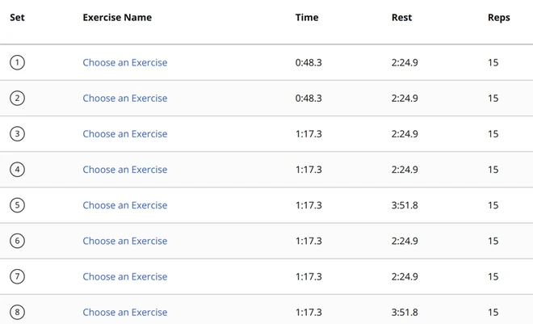
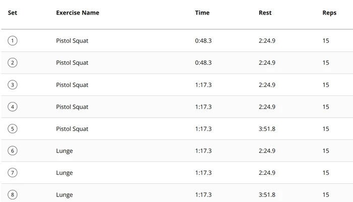
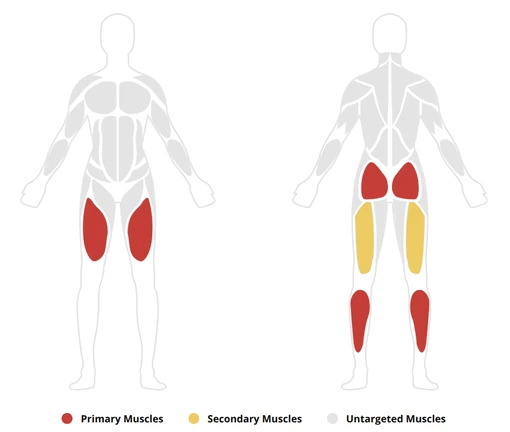

Garmin heart rate and Hevy sets in one workout.
garmin-hevy-sync copies workouts, routines and weigh-ins between a Garmin watch and Hevy, in both directions. It runs in the background on your own computer every 30 minutes, on Linux, macOS, Windows or Docker.
curl -LsSf https://danieltyukov.github.io/garmin-hevy-sync/install.sh | shInstalls uv if it is missing (uv brings its own Python 3.12), installs the tool, then starts the setup wizard. You can read install.sh first.
powershell -ExecutionPolicy ByPass -c "irm https://danieltyukov.github.io/garmin-hevy-sync/install.ps1 | iex"Run it in PowerShell. Installs uv if it is missing, installs the tool, then starts the setup wizard. You can read install.ps1 first.
git clone https://github.com/danieltyukov/garmin-hevy-sync && cd garmin-hevy-sync && docker compose run --rm garmin-hevy-sync setup && docker compose up -dRuns setup once in a temporary container, then starts a container that keeps syncing.
uv tool install git+https://github.com/danieltyukov/garmin-hevy-sync && garmin-hevy-sync setupFor machines that already have uv.
Needs Hevy Pro and a Garmin watch that records Strength activities. Version 0.2.0, MIT license.
Half a workout in each app
You start a Strength activity on the watch to get real heart rate and training load. Then you log the actual sets in Hevy on your phone, because typing reps on a watch is slow. Garmin and Hevy have no official integration, so each app ends up holding half of the session.
Recorded by the watch
- Heart rate
- Training load and training effect
- Calories and set timing
- Weigh-ins
Logged in Hevy
- Exercise names
- Reps and weights
- Routines
- Body measurements
After a sync, the Garmin activity holds the Hevy sets next to the heart rate the watch recorded. Sessions you only recorded on the watch show up in Hevy, and so do your Garmin weigh-ins.
Five flows, every 30 minutes
Each run goes through five flows in a fixed order. A and C use hevy2garmin, a community project. B, D and E are part of this project.
- AHevy workouts to Garmin activities. When the watch recorded the same session, the sets, reps and weights are merged into that recording. Garmin keeps the real heart rate and calories and does not gain a second, empty activity.
- CHevy routines to Garmin planned workouts, so you can follow them on the watch.
- BWatch-only sessions to Hevy workouts. For strength sessions with no Hevy log to merge into. Garmin exercise names are matched to Hevy exercises, and anything without a confident match is named in the workout description instead of being dropped.
- DGarmin weigh-ins to Hevy body measurements. It looks back a year, because weigh-ins are irregular.
- EExercise name repair. Fixes sets that show as “Choose an Exercise” in Garmin Connect. How that works.
Why the order matters
A runs before B. By the time B looks at Garmin, a session that started in Hevy already has its Hevy counterpart, so B skips it and nothing is imported twice. E runs last because it reads back what A wrote.
Loop prevention
A two-way sync without guards would copy the same workout back and forth. Four checks stop that:
- Pairing ledger
- B skips any Garmin activity that hevy2garmin has already paired with a Hevy workout, including sessions logged in Hevy hours later on the same day.
- Overlap window
- B skips any Garmin activity that starts within 45 minutes of an existing Hevy workout, or overlaps one in time. It also waits three hours after a session ends before importing it. This covers the gap before A records its pairing.
- Cross-marking
- When B creates a Hevy workout, it writes the pairing into hevy2garmin's ledger, so A never pushes it back to Garmin.
- Local ledger
- Every activity B has imported or skipped is recorded. Only failures are retried.
Exercise names that show up in Garmin
Merging Hevy sets into a watch recording used to leave every set reading “Choose an Exercise”, with a blank muscle map. The names were stored correctly. Garmin Connect ignored them because each set said it had been identified with zero confidence.


Garmin's rep counting stores how sure it was about each movement. Sets pushed in from outside carried a value of 0.0, which Garmin Connect reads as “nothing identified”, even when the name next to it is correct:
{
"category": "SQUAT",
"name": "PISTOL_SQUAT",
"probability": 0.0
}Flow E restates the same sets at full confidence and changes nothing else. It only touches active sets that have a real category at zero confidence, so sets the watch detected itself are left alone. hevy2garmin 0.12 now does this for new merges. Flow E repairs activities merged before that.

Runs in the background
The installer ends by starting garmin-hevy-sync setup, which asks for what it needs and then turns on the schedule:
- Hevy API key. Copy it from hevy.com/settings?developer. The API needs Hevy Pro.
- Garmin sign-in. Your email, password and the code Garmin emails you, once. The password is not stored, only tokens that refresh themselves.
- Body stats. Optional. They make the calorie estimates more accurate.
- Schedule. Setup turns on the background run, every 30 minutes from then on.
| System | How it runs |
|---|---|
| Linux | A systemd user timer, or cron where systemd is not available |
| macOS | A launchd agent |
| Windows | A Task Scheduler task that runs without opening a window |
| Docker | The container repeats the sync on its own |
Runs missed while the computer was asleep or off are caught up. To change the schedule yourself, use garmin-hevy-sync schedule install, remove or status.
Commands
gh-sync is a shorter alias for garmin-hevy-sync.
setup- Run the setup wizard again.
login- Sign in to Garmin again, for example after the sign-in expired.
sync- Run the flows now.
--dry-runreports what would change without writing anything,--flows a bruns only those flows, and--every 30mkeeps repeating. status- Show what has been synced and the last run's summary.
doctor- Check both accounts and list your devices and recent activities.
logs- Show the log. Add
-fto follow it. unmapped- List Garmin exercises that have no confident Hevy match.
push-to-watch- Send planned workouts to the watch now.
scheduleinstall,removeorstatusfor the background schedule.--version- Print the installed version.
Privacy and safety
- It runs on your computer. Nothing leaves it except requests to Hevy and Garmin.
- Your Garmin password is used once, to sign in, and is not saved. The sign-in leaves refreshable tokens in
~/.garminconnect. - The Hevy API key and settings live in one folder for your user account. Set
GH_SYNC_HOMEto use a different one.- Linux
~/.config/garmin-hevy-sync- macOS
~/Library/Application Support/garmin-hevy-sync- Windows
%APPDATA%\garmin-hevy-sync
- Flow A merges into the watch recording instead of replacing it, so the heart rate, training effect and body battery Garmin recorded stay as they were.
sync --dry-runshows what a run would change without writing anything.- When a run fails, for example because the Garmin sign-in expired, you get a desktop notification. To get a push on your phone instead, set
GH_NOTIFY_URLto an ntfy-style URL. - Keep two-factor authentication on. The emailed code is needed once, at sign-in.
Questions
What do I need?
Hevy Pro, because Hevy's API is only available to subscribers. A Garmin Connect account and a watch that records Strength activities; it was developed on a Venu 4. A computer that is on some of the time, or a server that runs Docker. The installer brings everything else.
Does Garmin keep my heart rate?
Yes. Flow A merges the Hevy sets into the activity your watch recorded, so heart rate, training load and calories stay. The other direction cannot carry heart rate: Hevy's API has no field for it, so watch-only sessions reach Hevy without it.
How soon does a workout show up in the other app?
Within one sync interval, 30 minutes by default, as long as the computer is awake. It is not instant. Run garmin-hevy-sync sync to sync straight away.
What happens if I delete a workout?
Deletions are not copied. A workout you delete in one app stays in the other until you delete it there too.
Can it stop working?
Yes. Garmin has no public API for this, so the Garmin side uses a community library that signs in the way the Garmin Connect app does. A change to Garmin's sign-in can break it until that library is updated. If a run fails you get a notification, and garmin-hevy-sync doctor shows which side is failing.
hevy2garmin says its PyPI command line is deprecated. Is that a problem?
No. The hevy2garmin command line on PyPI is deprecated after 31 October 2026. This project pins a version that keeps working.
How do I uninstall it?
Run garmin-hevy-sync schedule remove, then uv tool uninstall garmin-hevy-sync. Delete the settings folder listed under Privacy and safety, and ~/.garminconnect and ~/.hevy2garmin if no other tool uses them. With Docker, run docker compose down -v in the cloned folder; -v also deletes the data volume.
Is this made by Garmin or Hevy?
No. It is an independent open source project and is not affiliated with, endorsed by or supported by Garmin or Hevy.